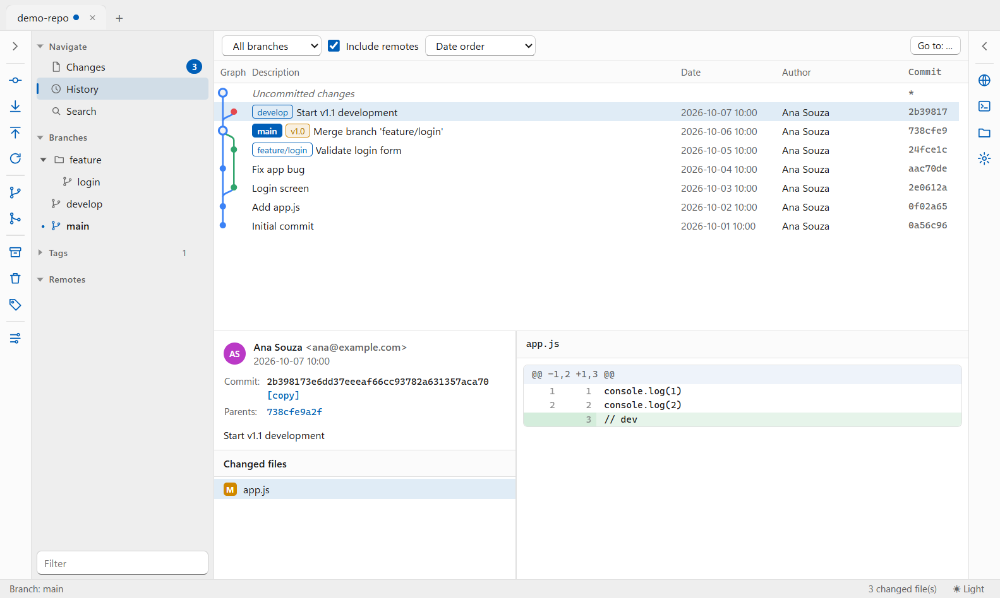

Um cliente Git moderno e multiplataforma para Windows, macOS e Linux. Livre, de código aberto e sem conta para criar.

As operações que você faz todo dia, com diálogos claros e o Git de verdade por baixo.
Histórico com branches, merges e tags lado a lado, detalhes e diff de cada commit.
Adicione ao stage ou descarte arquivos inteiros, blocos ou só as linhas que você escolher.
Fetch, pull com merge ou rebase e push por branch, com progresso ao vivo.
Reordene, junte, corrija ou descarte commits arrastando para cima e para baixo.
Vários repositórios abertos ao mesmo tempo, favoritos, clone e criação em segundos.
Interface isolada do sistema e repositórios baixados não executam programas ao serem abertos.
Escolha seu sistema. É preciso ter o Git instalado.
Na primeira execução, o SmartScreen avisa: clique em “Mais informações” → “Executar assim mesmo”.
Na primeira abertura, clique com o botão direito no app → “Abrir”, ou rode xattr -dr com.apple.quarantine /Applications/EasySource.app.
No AppImage, rode chmod +x EasySource-*.AppImage antes de abrir.
As builds não são assinadas digitalmente. Confira a integridade com o SHA256SUMS.txt de cada versão, ou gere o seu próprio build a partir do código. Todas as versões →
Use, estude, modifique e distribua. O código está todo no GitHub.
Uso gratuito para qualquer finalidade, inclusive comercial. Se você distribuir uma versão modificada, ou oferecê-la pela rede, o código-fonte dela também precisa ser aberto sob a mesma licença.
Quer incorporar o EasySource num produto fechado, sem publicar o código? Há uma licença comercial disponível.